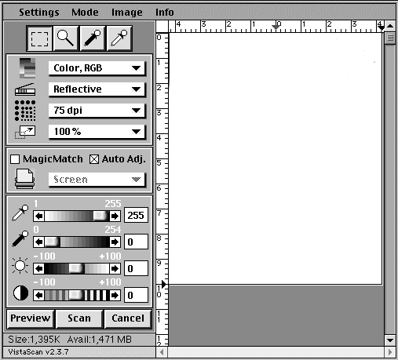

Scanning with PageManager
PageManager is graphic scanning software for use with the UMAX
Astra 1200S scanner. It works in conjunction with PixWizard (a
graphic editing program) to scan and edit graphics in preparation
for inclusion in documents -- most notably, HTML files.
To use PageManager in the Elementary Education Computer lab
(Smith 453) do the following:
- Make sure the scanner is on prior to starting the computer
The on button is located on the back of the scanner, bottom right
corner. Move it to the | icon.
- Turn on the computer by pressing the power button on the
front of the CPU.
- Place your image on the scanner by:
- Lifting the lid
- Butting the image against one of the sides to make it square
with the scanning mechanism
- Then lowering the lid gently to press the image flat against
the glass
- Once the computer has started up, locate the "Scan Software"
shortcut on the desktop and double-click it.
- The PageManager desktop will appear.
- Locate the Scan menu, and select "Acquire." The
vistascan control panel will open. Check the control panel settings.
They should be:
- Image type: Color RGB
- Scan type: Reflective
- DPI: 100 dpi
- Size: 100
- Make sure that Auto Adjust is selected with a checkbox (see
the figure below).

- To see your graphic, click the Preview button at the bottom
left corner of the control screen.
- Once your graphic has been Preview scanned it will appear
in the white area to the right.
- To select a specific portion of the image for final scanning,
drag your mouse (with the left mouse button down) over the desired
area to create a selection rectangle. This will identify for
the scanner the area for the final scan.
- Click the Scan button to execute the scan.
- Once the image has been scanned it will move to the PageManager
desktop.
Proceed to the desktop information page.